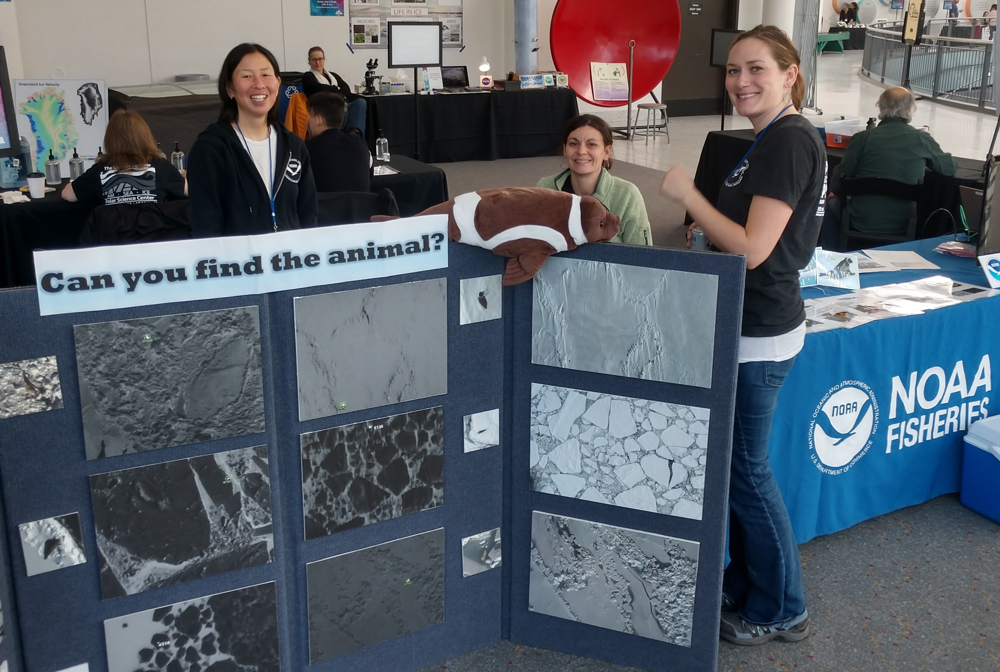

11 Outreach

Participating in outreach is encouraged for all MML staff. This includes anything from a formal NOAA event to simply visiting a classroom to teach kids about marine mammals. On this page you’ll find information about outreach events, instruction on how to reserve materials, and other ideas you can add to!
11.1 Outreach Ideas
There are a number of local outreach opportunties such as:
- Polar Science Days at the Pacific Science Center
- Marine Mammal Mania at the Seattle Aquarium
- NOAA Live! Alaska
etc, etc, etc - look for more regular events you’ve forgotten about…
school events - science fair judge, classroom volunteer, etc
11.2 Outreach Materials
There are outreach materials available through both the MML as well as the AFSC Communications division. There you can find banners and more general materials as well as fisheries specific supplies. The MML collection includes a more extensive selection of marine mammal skulls, pelts, baleen, and plenty of whale lice, which is always a big hit!
You can get a sneak peak of what’s in the MML collection by perusing the Inventory. These materials are stored in the shared storage room 4-1045 under the counter across from PEP’s storage locker. Feel free to sort through these bins to put together what you would like to take to your outreach event.
11.2.1 Reserving MML Outreach Materials
To reserve the MML outreach materials, check the MML Outreach Calendar to ensure there’s not a conflict with another reservation, and then create an event to cover the days you’ll need the materials. Inlcude the following in your event details:
- your name
- name of the event you plan to attend
- date, time, location of the event itself
- include the days needed to pick up and drop off supplies in the date range of your reservation
When your event is completed, please return materials promptly and record your outreach event to help the communications division track staff participation in outreach events across the center.
- Include descriptions of some PEP outreach projects and the acoustic slideshow
Creative MMLites have developed and built upon a number of powerpoint presentations over the years. Feel free to make use of and contribute to these for your event MML Outreach presentation materials.
Visit the AFSC Education & Outreach pageto see what else is available through the Communications division.
Feel free to contact Erin Moreland or Michelle Lander for assistence.